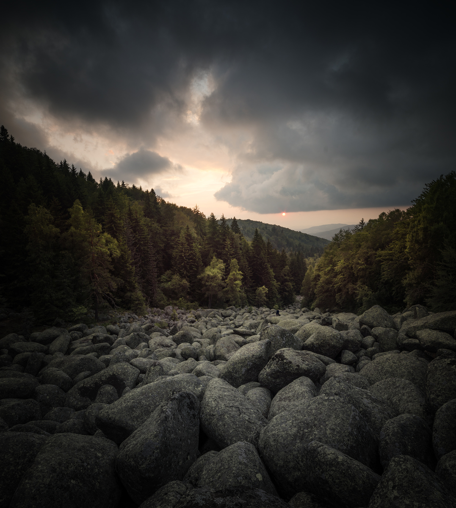

Златните мостове.
Местност Златните мостове се намира във Витоша планина и представлява най-голямата каменна река в България. Името идва от златистия цвят на лишеите, които покриват огромните камъни.
От Златните мостове може да се достигне до Черни връх по два основни маршрута, които преминават през много от добре познатите на планинарите витошки хижи.
